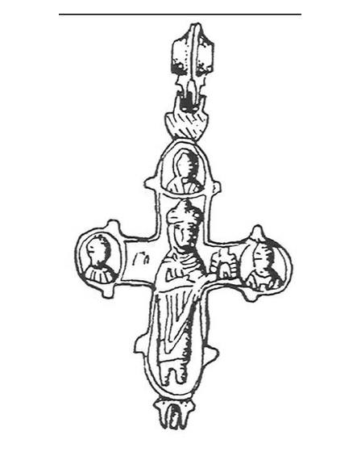
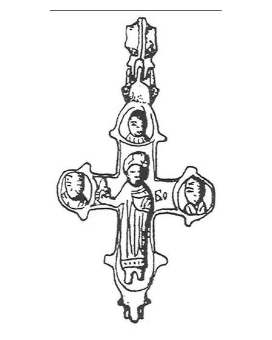

Catalog › CE-0540 · IAH2007-3-2
Encolpion bivalv Boris și Gleb, Ozeriany (Рис. 3, 2)
sec. XII–XIII (1101–1300) · Ozeriany, regiunea Ternopil, raionul Borșciv, Ucraina · Muzeul de Studii Locale Borșciv (Борщівський краєзнавчий музей, БКМ)
double-sided reliquary cross (enkolpion); c. XII–XIII (1101–1300); found at Ozeriany, regiunea Ternopil, raionul Borșciv, Ucraina; kept at Muzeul de Studii Locale Borșciv (Борщівський краєзнавчий музей, БКМ).




Identificare
- Categorie
- Encolpion bivalv (relicvar)
- Tehnică
- Turnare în relief
- Dimensiuni
- Î 71 × L 52 mm
Iconografie
- Avers
- Sf. Boris și Gleb
- Descriere avers
- Cneazul Gleb în veșmânt lung și manta prinsă pe umărul drept cu o fibulă rotundă; în mâna dreaptă ținea o bisericuță mică; în stânga figurii litere neclare «ГО» sau «ГЛ»; mâna stângă pe jumătate îndoită, cu palma deschisă lipită de piept. Figurile din medalioane sunt schematice.
- Revers
- Sf. Boris și Gleb
- Descriere revers
- Cneazul Boris în căciulă de cneaz, în veșmânt lung cu cute; în mâna stângă o bisericuță mare cu trei turle; dreapta pe jumătate îndoită, cu palma deschisă lipită de piept; în dreapta figurii inscripția «ВО» incizată cu dalta. Sfinții sunt reprezentați din față, cu chipuri schematice.
- Inscripții
- ГО sau ГЛ (neclar); ВО
Datare și atribuire
- Datare
- sec. XII–XIII (1101–1300)
- Tipologie
- Tip Boris și Gleb
Descoperire
- Localitate
- Ozeriany
- Regiune
- regiunea Ternopil, raionul Borșciv
- Țară
- Ucraina
- Context
- Necunoscut
- Coordonate
- 48.8778° N, 25.9497° E
- Precizia locului
- Doar localitatea
Păstrare și referințe
- Colecție
- Muzeul de Studii Locale Borșciv (Борщівський краєзнавчий музей, БКМ)
- Bibliografie
- М. Ягодинська, Нові культові речі з давньоруських пам’яток Західного Поділля, în „Матеріали і дослідження з археології Прикарпаття і Волині”, 11, 2007, p. 346–357 [Ягодинська 2007], p. 350, Рис. 3, 2, reprodusă la Рис. 3, 2 (p. 351).
- Figura
- Рис. 3, 2
- Planșe
- Ягодинська 2007, p. 351
- Analogii
- Cruci cu Boris și Gleb răspândite în Rusia Kieveană și în afara ei (Дончева-Петкова 1985, p. 46, fig. 1; Рыбаков 1971, p. 79, fig. 102; Фіголь 1997, p. 178).
- Observații
- Mai slab păstrat decât piesa de la Ustia: figurile nu sunt detaliate, imaginile din medalioane sunt schematice. Dimensiuni 7,1×5,2 cm fără ureche. Fără număr de inventar. Fețele sunt atribuite după text: Gleb pe fața din față, Boris pe fața din spate. Material: aliaj de cupru, fără precizare suplimentară. Coordonate: ale localității (aproximative), nu date în sursă.
Citare: Corpus Encolpiorum, CE-0540, Encolpion bivalv Boris și Gleb, Ozeriany (Рис. 3, 2), --root/piese/IAH2007-3-2/ (accesat 2026-10-17).